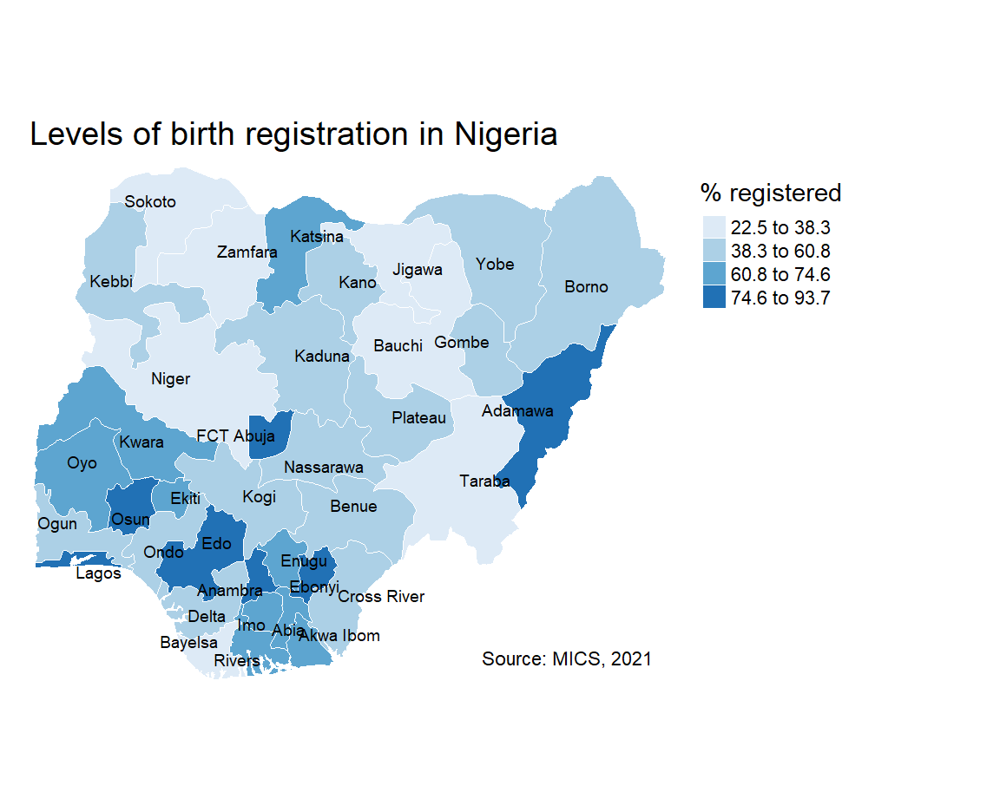

8 Choropleth maps
8.1 Introduction
Choropleth or thematic maps visualise the variation in the values of a variable across geographical areas by encoding them in a colour gradient. Alternative graphics such as a bar or lollipop chart could be used to show the data but they lack potentially important spatial information. A choropleth map allows you to begin to identify hotspot areas and clusters of high or low values.
However, there are three key issues to consider before choosing to display your data in a choropleth map.
1. Counts or rates
Choropleth maps that visualise the distribution of counts are sensitive to population size. The population distribution will be mapped rather than the variable of interest. It is therefore recommended to map rates or percentages so that the population at risk is accounted for.
2. Modifiable Areal Unit Problem
The Modifiable Areal Unit Problem or MAUP (Openshaw, 1984) points out that the spatial distribution of values in a choropleth map may be a function of the size and shape of geographical areas. There is not much that we can do about MAUP but we need to be aware of its potential impact.
3. Classification schemes
Different classification schemes can produce very different choropleth maps (see below). As the distibution of a histogram is sensitive to the size of its bins so the spatial distribution visualised in a choropleth map can be affected by its intervals. It is good practice to inspect the values of your variable in a histogram before deciding which classification scheme to adopt.
8.2 Getting started
The main package that we will be using to create choropleth maps is the tmap package. To install the package you can run:
We will also be using the sf package to load spatial data, RColorBrewer for colour palettes and dplyr for data manipulation.
8.3 Sourcing geospatial data
Subnational administrative boundaries are available from two sources: GADM and Natural Earth. The data are free to use for non-commercial purposes.
8.3.1 GADM
You can either download administrative boundary files using the geodata package or directly from the GADM website. The function gadm() has two key arguments. You need to supply the three-letter ISO code to country and choose a level of administrative subdivision. 0 is the value for country and 1 is for the next administrative level down.
The code below loads the states of Nigeria.
If you prefer to download the files manually from the website you need to select ‘Nigeria’ from the country dropdown and then choose a file format. GeoJSON is an open, non-proprietary format that is used across the Web. There are three administrative divisions available:
0 National
1 States (36 + Federal Capital Territory)
2 Local Government Areas (774)
We will download ‘level 1’ in GeoJSON format by copying the URL and unzipping it. We can then use the st_read() function from the sf package to load the file into the R session. The sf package converts the GeoJSON file into a simple features object, a data frame with features stored in rows and attributes in columns. The feature geometries of the object are stored in a list-column at the end. These are the coordinates that describe the boundary of each state.
8.3.2 Natural Earth
Level 1 administrative boundaries are available from Natural Earth using the ne_states() function from the rnaturalearth package.
You can also download subnational boundaries directly from the Natural Earth website. If you scroll down to ‘Admin 1 – States, Provinces’ you can download the ESRI shapefile of first-order administrative boundaries for a number of countries. To obtain the states of Nigeria we need to filter the results by the ISO code.
download.file("https://www.naturalearthdata.com/http//www.naturalearthdata.com/download/10m/cultural/ne_10m_admin_1_states_provinces.zip", "ne_10m_admin_1_states_provinces.zip")
unzip("ne_10m_admin_1_states_provinces.zip")
nigeria <- st_read("ne_10m_admin_1_states_provinces.shp") |>
filter(adm0_a3 == "NGA")8.4 Loading geospatial data
On loading with st_read(), the R console prints out the number of features, the geometry type, dimensions, bounding box, and coordinate reference system (CRS). We can confirm that there are 37 features (states) and that the vector boundary layer is projected in the World Geodetic System 1984 (WGS84), with longitude and latitude units of decimal degrees.
nigeria <- st_read("data/nigeria.geojson")
#> Reading layer `nigeria' from data source
#> `C:\Users\partrh\GitHub\r4vs\data\nigeria.geojson' using driver `GeoJSON'
#> Simple feature collection with 37 features and 1 field
#> Geometry type: MULTIPOLYGON
#> Dimension: XY
#> Bounding box: xmin: 2.671082 ymin: 4.272162 xmax: 14.66994 ymax: 13.88029
#> Geodetic CRS: WGS 84We can visualise the state boundaries using the base R plot() function. We just need to supply the geometry column.
8.5 Plotting in tmap
We can also use the tmap package to plot the state boundaries. Combining the tm_shape() and tm_borders() functions renders the outlines of each state.
8.5.1 Style borders
The borders can be styled by passing col (colour) and lwd (border line width) arguments to the tm_borders() function.
8.5.2 Labelling
Each state can be labelled using the tm_text() function. Again, we supply various arguments to style the labels. The argument auto.placement ensures that labels don’t sit on top of each other.
tm_shape(nigeria) +
tm_borders(col = "#000000", lwd = 0.5) +
tm_text("state",
size = 0.8,
col = "black",
auto.placement = TRUE)If you want to only label specific states you can use a filter.
8.6 Joining data
We have the boundaries of each state in Nigeria but we need some statistical data to create a choropleth map. We will be using data provided by the 2021 Nigeria Multiple Indicators Cluster Survey (MICS) on the percentage of children under age 5 whose births are registered by each Nigerian state.
Both our spatial data and our birth registration data share a matching state variable which we can use to join the datasets. To check that all of the state names are consistent between datasets we can run an anti join.
anti_join(nigeria, df, by = "state")
#> Simple feature collection with 1 feature and 1 field
#> Geometry type: MULTIPOLYGON
#> Dimension: XY
#> Bounding box: xmin: 6.749594 ymin: 8.404707 xmax: 7.628196 ymax: 9.351419
#> Geodetic CRS: WGS 84
#> state geometry
#> 1 Federal Capital Territory MULTIPOLYGON (((6.978107 8....We can see that the ‘Federal Capital Territory’ in the spatial data has no match in the birth registration data. This is because the state is recorded as ‘FCT Abuja’ in the other dataset. We can fix this by recoding the state name in the spatial data.
We can now run the left_join() function to join the two datasets together.
When left_join() fails to find a match it enters a missing value in the corresponding row. We can therefore check that the join has worked by filtering out any missing values.
Now we are ready to create a choropleth map.
8.7 Basic choropleth
The tm_polygons() function creates an off-the-shelf choropleth map. You just supply the name of the variable that you want to visualise to col and a title for the legend.
To have finer control over the choropleth map it is better to use a combination of tm_borders() and tm_fill(). This allows us to style the borders.
tm_shape(sf) +
tm_borders(col = "#FFFFFF", lwd = 0.5) +
tm_fill(col = "percent", title = "% registered")The default colour palette is orange and the map classification is ‘pretty’. We can change these next.
8.8 Colour palettes
tmap uses colour palettes from the ColorBrewer website which differ depending on the chosen sequential, diverging, or categorical colour scheme. If we wanted to show how the birth registration values are spread around the mean we could use colour palettes for a diverging scheme. However, we will use a palette from the sequential colour scheme because we want to visual the distribution of values from low to high. Here we will use the “Blues” palette which visualises low values as light blue and high values as dark blue.
8.9 Classes
When map classification breaks are not set explicitly tmap defaults to style = "pretty". This is a base R function which calculates roughly equal spaced round values. However, tmap has a number of other map classification schemes to choose from.
8.9.1 Equal interval
Divides the distribution of values so that the range of values is identical within each class. The difference between the highest and lowest value is the same for each class grouping.
+ represents the density of observations around the mean
- maps tend to be unbalanced because the values aren’t evenly distributed.
8.9.2 Quantile
Sorts the values of a variable in ascending order and assigns an equal number of geographical areas to each colour.
+ highlights a proportion of observations such as the top 25% of geographical areas
- tends to mask heterogeneity
8.9.3 Natural breaks (jenks)
Class categories are based on natural groupings in the data. Uses a statistical procedure which seeks to reduce the variance within classes and maximises the variance between classes.
+ identifies areas with similar values
- the classes are unique to each variable so cannot be reused with other variables
8.9.4 Custom breaks
Custom map classifications can be created by supplying breaks and labels to the tm_fill() function.
8.10 Customisation
There are several improvements we can make to the choropleth map by changing the layout, adding titles and tweaking the legend.
tm_shape(sf) +
tm_borders(col = "#FFFFFF", lwd = 0.5) +
tm_text("state", size = 0.6, col = "black", auto.placement = TRUE) +
tm_fill(col = "percent", title = "% registered", style = "jenks", n = 4, palette = "Blues") +
tm_layout(frame = FALSE,
main.title = "Levels of birth registration in Nigeria",
main.title.size = 1.2,
legend.outside = TRUE) +
tm_credits("Source: MICS, 2021",
bg.color = "white",
position = c("right", "bottom"))
You can also add in some cartographic elements such as a compass rose (tm_compass()) or scale bar (tm_scale_bar()) if required.
8.11 Interactivity
The tmap package also allows you to view your maps interactively. All you need to do is to switch between tmap_mode("view") for interactive viewing and tmap_mode("plot") for static plots.
8.12 Exporting maps
To export static maps you can use the tmap_save() function. Just save your plot as an object and give it a filename.